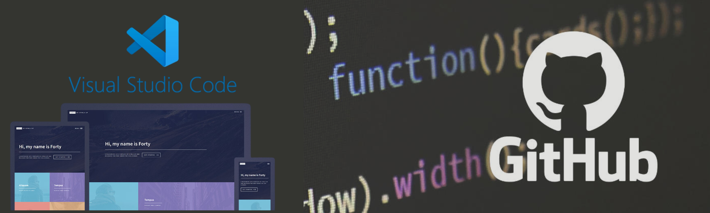

Semana 2
En la clase de hoy, el profesor nos comenzó a preguntar sobre que era una "Solución Técnologica" y si teniamos algún conocimiento sobre ello, prosiguió preguntando aleatoriamente sobre cuál es la definición de "Innovación". Luego continuo con la explicación sobre las ODS, nos preguntó si conociamos algunas, para que posteriormente nos muestre un video sobre algunos proyectos de Startups que toman ODS como parte de su solución .
Por otro lado realizamos una dinámica competitiva en grupo la "Ideatón", donde el equipo ganador obtendría 01 punto adicional en las siguientes actividades calificadas. Estando ya en grupos teniamos 5 minutos para presentar una idea que debería solucionar como mínimo 02 problemáticas basadas en ODS, para ser sincera fue bastante difícil realizar la investigación y todo en 5 minutos pero se pudo lograr, posteriormente en grupo debíamos idear soluciones tecnológicas de problemáticas basadas en las ODS por cada idea de cada integrante, luego un integrante cambio de grupo y terminado el tiempo se tuvo que exponer la idea de cada uno con el formato del "Jobs to be done". Después de eso el profesor paso a explicar las siguientes actividades que se realizarían en las próximas semanas, las cuales 02 serían individuales y 01 en grupo.
Por último recuerdo perfectamente este día ya que fue justo el día de mi cumpleaños n° 22 y me llevé una sorpresa por parde de 02 de mis actuales compañeros de proyecto (kenneth y khathie) ellos fueron muy amables en obsequiarme un muffin de chocolate, uno de mis sabores favoritos, me sentí muy especial y bienvenia a lo que ahoara llamo equipo de trabajo.
 CLASE VIRTUAL:En esta clase, nos enseñaron sobre ¿Qué es una bitácora? y se explicó sobre nuestro proyecto personal de la bitácora digital, la cual trabajariamos semana a semana hasta culminar el curso.
Luego se procedio a la explicación de las herramientas que usaremos para poder programar nuestra página web, conocí y cree una cuenta en la web GitHub, también instalamos el programa Visual Studio Code para poder configurar la página web con código HTML, descargando después la plantilla que usaremos de HTML5UP.